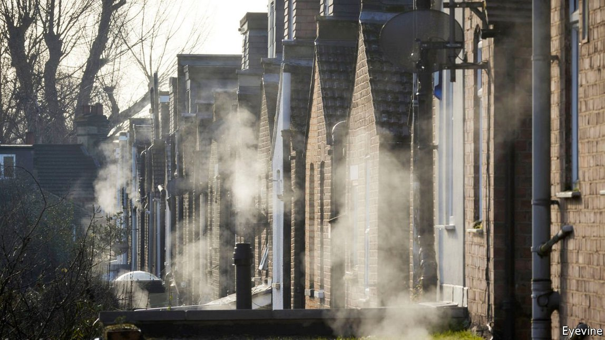

Text
2021-05-04T15:00:18+00:00
Domestic heating
家庭采暖
家庭採暖
If you can have microwave ovens, why not microwave boilers?
既然可以有微波炉，何不再加个微波锅炉？
既然可以有微波爐，何不再加個微波鍋爐？
A small British firm plans to try
一家英国小公司打算尝试一下
一家英國小公司打算嘗試一下
DECARBONISING AN ECONOMY is a big job. Coal- and gas-fired power plants must be swapped for wind, solar or nuclear ones. Petrol-driven cars must be replaced by electric versions. Less attention is paid to heating. But in cold countries such as Britain, warming houses, offices and the like consumes more fossil fuel than either electricity generation or transport.
为经济体脱碳是个大工程。燃煤和燃气发电厂必须被风电厂、太阳能发电厂和核电站取代。汽油驱动的汽车必须被电动汽车取代。供暖受到的关注就没那么多了。但在英国这类寒冷的国家，为房屋、办公室及类似建筑供暖而消耗的化石燃料比发电或运输都要多。
為經濟體脫碳是個大工程。燃煤和燃氣發電廠必須被風電廠、太陽能發電廠和核電站取代。汽油驅動的汽車必須被電動汽車取代。供暖受到的關注就沒那麼多了。但在英國這類寒冷的國家，為房屋、辦公室及類似建築供暖而消耗的化石燃料比發電或運輸都要多。
The fuel involved is usually natural gas. This is burned in a central boiler in order to heat water that flows to radiators elsewhere in the building. Britain's government would like to change this. From 2025 gas-fired boilers will be banned in newly built homes. By the mid-2030s installing new gas boilers in existing houses will be banned, too.
供暖用到的燃料通常是天然气。天然气在中央锅炉内燃烧，给水加热，热水再流向建筑物中其他地方的暖气装置。英国政府想要改变这种情况。从2025年起，新建住宅将禁用燃气锅炉。到2035年前后，在现有住房内安装新的燃气锅炉也将被禁止。
供暖用到的燃料通常是天然氣。天然氣在中央鍋爐內燃燒，給水加熱，熱水再流向建築物中其他地方的暖氣裝置。英國政府想要改變這種情況。從2025年起，新建住宅將禁用燃氣鍋爐。到2035年前後，在現有住房內安裝新的燃氣鍋爐也將被禁止。
The question is what will replace them. Unlike electricity generation, where renewables are proving popular, or cars, where battery-powered vehicles are rapidly becoming established, the market for green heating is anyone's to play for. The usual suspects (assuming any electricity supplied is generated using appropriately carbon-free means) include electric immersion heaters, heat pumps (devices that work a bit like refrigerators in reverse, in that they extract heat from a building’s surroundings and then pump it into that building), and burning hydrogen instead of natural gas. Engineers at a small British company called Heat Wayv, though, think they have another contender: microwaves.
问题是用什么取代燃气锅炉。在发电领域，可再生能源正广受欢迎；在汽车产业里，电池驱动的车辆正迅速成为寻常事物。绿色供暖市场不同，人人尚可参与。意料之中的方案（假设用于驱动的电力全都是通过适当的无碳方式产生）包括浸没式电加热器、热泵（这种设备的工作原理有点像冰箱的反面，因为它们从建筑物的周围环境吸收热量，再将热量泵入建筑物），以及燃烧氢气而非天然气。不过，英国一家名为Heat Wayv的小公司的工程师认为他们手头还有一样东西可以加入战局：微波。
問題是用什麼取代燃氣鍋爐。在發電領域，可再生能源正廣受歡迎；在汽車產業里，電池驅動的車輛正迅速成為尋常事物。綠色供暖市場不同，人人尚可參與。意料之中的方案（假設用於驅動的電力全都是通過適當的無碳方式產生）包括浸沒式電加熱器、熱泵（這種設備的工作原理有點像冰箱的反面，因為它們從建築物的周圍環境吸收熱量，再將熱量泵入建築物），以及燃燒氫氣而非天然氣。不過，英國一家名為Heat Wayv的小公司的工程師認為他們手頭還有一樣東西可以加入戰局：微波。
The principle is the same as in a microwave oven. Many molecules, water included, are electrically dipolar. This means they have a positive charge at one end and a negative one at the other. They will therefore rotate to align themselves with a strong electromagnetic field. If that field is oscillating, as is the case with electromagnetic radiation such as microwaves, then the molecules themselves will oscillate too—bumping and jostling their neighbours as they do so, and thus creating heat.
微波供热的原理和微波炉一样。包括水在内的很多分子都是电偶极的。这意味着它们的一端带正电荷，另一端带负电荷。因此，它们会旋转，使自己与强电磁场对齐。如果这个强电磁场是振荡的，就像微波等电磁辐射一样，那么这些分子本身也会振荡——在振荡过程中会碰撞、推挤相邻的分子，从而产生热量。
微波供熱的原理和微波爐一樣。包括水在內的很多分子都是電偶極的。這意味着它們的一端帶正電荷，另一端帶負電荷。因此，它們會旋轉，使自己與強電磁場對齊。如果這個強電磁場是振蕩的，就像微波等電磁輻射一樣，那麼這些分子本身也會振蕩——在振蕩過程中會碰撞、推擠相鄰的分子，從而產生熱量。
But there is more to building a microwave boiler than simply repurposing the parts used for an oven, says Phil Stevens, one of Heat Wayv's founders. Most microwave ovens employ magnetrons—chunky devices built by surrounding a cathode with a carefully shaped anode that is designed to produce electromagnetic radiation of a specific frequency. With the help of a pair of big chipmakers, Heat Wayv has come up with a solid-state device that performs the same job, but which fits on a 10-square-centimetre silicon chip.
但是，Heat Wayv的创始人之一菲尔·史蒂文斯（Phil Stevens）表示，制造微波锅炉可不是随便把微波炉的零件改一改就可以用了。大多数微波炉采用的是磁控管——这种笨重的装置是用精心设计的阳极环绕阴极制成，以产生定频电磁辐射。在两家大型芯片制造商的帮助下，Heat Wayv构想出了一种可以完成相同工作的固态装置，但却是将它安装在10平方厘米的硅片上。
但是，Heat Wayv的創始人之一菲爾·史蒂文斯（Phil Stevens）表示，製造微波鍋爐可不是隨便把微波爐的零件改一改就可以用了。大多數微波爐採用的是磁控管——這種笨重的裝置是用精心設計的陽極環繞陰極製成，以產生定頻電磁輻射。在兩家大型芯片製造商的幫助下，Heat Wayv構想出了一種可以完成相同工作的固態裝置，但卻是將它安裝在10平方厘米的硅片上。
Arrays of these devices beam microwaves into water in a boiler, heating it up. The pipes that carry the water are also made of microwave-sensitive materials, as is the insulation that lags them. And a heat exchanger recycles residual waste warmth. The upshot, says Mr Stevens, is a boiler that is about 96% efficient. The best existing gas boilers rarely exceed 90%.
这些设备的组合将微波射入锅炉中，给水加热。输水管道与管道外用于保温的绝缘层一样，也是由微波敏感材料制成的。另外还有一个热交换器回收利用剩余的废热。史蒂文斯说，由此制造出的锅炉效率高达约96%。现有最好的燃气锅炉的效率很少超过90%。
這些設備的組合將微波射入鍋爐中，給水加熱。輸水管道與管道外用於保溫的絕緣層一樣，也是由微波敏感材料製成的。另外還有一個熱交換器回收利用剩餘的廢熱。史蒂文斯說，由此製造出的鍋爐效率高達約96%。現有最好的燃氣鍋爐的效率很少超過90%。
Efficiency matters, because the move away from gas may mean higher heating bills. Electricity generated from fossil fuels is necessarily more expensive than the fuels themselves. In Britain, at the moment, a given amount of energy delivered as electricity costs three or four times as much as the same amount delivered by natural gas. Switching to renewables is unlikely to change that much. Though the “fuel” involved (wind or sunlight) is free, other costs are often higher than for conventional power stations. Forced by law to switch from gas, then, customers will surely have their eyes on the cost.
效率很重要，因为不使用燃气可能意味要交更多取暖费。燃烧化石燃料生产出来的电必然比燃料本身更贵。在英国，目前以电的形式提供一定量的能源所需的成本是用天然气提供同样多的能源的三到四倍。转向可再生能源也不太可能改变多少。虽然可再生能源使用的“燃料”（风能或太阳能）是免费的，但其他成本往往比传统发电站高。所以，在法律强制下弃用天然气的消费者肯定会紧盯成本。
效率很重要，因為不使用燃氣可能意味要交更多取暖費。燃燒化石燃料生產出來的電必然比燃料本身更貴。在英國，目前以電的形式提供一定量的能源所需的成本是用天然氣提供同樣多的能源的三到四倍。轉向可再生能源也不太可能改變多少。雖然可再生能源使用的“燃料”（風能或太陽能）是免費的，但其他成本往往比傳統發電站高。所以，在法律強制下棄用天然氣的消費者肯定會緊盯成本。
Heat Wayv argues its technology offers advantages over rival methods. Immersion heaters must run continuously to deliver water at a suitable temperature. That often warms water which is never used. By contrast, and like existing gas boilers, microwaves heat water quickly enough to provide it only when it is needed.
Heat Wayv认为其技术比竞争对手的方法更具优势。浸没式加热器必须持续运转才能提供适温的水。这往往把从未派上用场的水也加热了。相比之下，和现有的燃气锅炉一样，用微波把水加热足够迅速，只在需要时才会提供。
Heat Wayv認為其技術比競爭對手的方法更具優勢。浸沒式加熱器必須持續運轉才能提供適溫的水。這往往把從未派上用場的水也加熱了。相比之下，和現有的燃氣鍋爐一樣，用微波把水加熱足夠迅速，只在需要時才會提供。
Heat pumps, too, have drawbacks. Their efficiency plummets on cold days, when they are needed most. They are also bulky. And they generate water that is warm rather than hot, often requiring the retrofitting of bigger radiators or underfloor heating.
热泵也有缺陷。在热泵需求最旺的严寒时节，它们的效率却大幅下跌。热泵的体积也很庞大。而且产生的水是温水而非热水，这通常需要加装更大的暖气片或地暖。
熱泵也有缺陷。在熱泵需求最旺的嚴寒時節，它們的效率卻大幅下跌。熱泵的體積也很龐大。而且產生的水是溫水而非熱水，這通常需要加裝更大的暖氣片或地暖。
Hydrogen, meanwhile, must either be extracted from natural gas or created by running electrical currents through water. Both processes are inherently inefficient and the former is hardly green. Also, the infrastructure needed to produce and deliver hydrogen in quantity does not yet (and may never) exist.
而说到使用氢气，它必须从天然气中提取或经由电流通过水产生。这两种过程本身就低效，而且前者已经不算环保了。此外，大规模生产和输送氢气所需的基础设施还不存在（可能永远也不会存在了）。
而說到使用氫氣，它必須從天然氣中提取或經由電流通過水產生。這兩種過程本身就低效，而且前者已經不算環保了。此外，大規模生產和輸送氫氣所需的基礎設施還不存在（可能永遠也不會存在了）。
Heat Wayv hopes to be producing microwave boilers for sale by 2024, in time for the first stage of the government’s ban. Mr Stevens says the idea has attracted interest from most of Britain’s big housebuilders. Soon, perhaps, microwaves may heat people’s water as well as their food. ■
Heat Wayv希望在2024年之前生产出供出售的微波锅炉，这样就能赶上政府颁布禁令的第一阶段。史蒂文斯表示，这个想法已经引起了英国大多数大型房屋建筑商的兴趣。也许不久之后，微波就能在给人们加热食物的同时也加热水了。
Heat Wayv希望在2024年之前生產出供出售的微波鍋爐，這樣就能趕上政府頒布禁令的第一階段。史蒂文斯表示，這個想法已經引起了英國大多數大型房屋建築商的興趣。也許不久之後，微波就能在給人們加熱食物的同時也加熱水了。